#34 实际源码挂载：16 张合成截图
正式 App 源码，不是外部变换预览。原图不在公开图库；400px dirty/force 是安全容器映射，不是找到同名原执行画面。差异与测量说明 · SHA-256 / 审计
新建 · environment-create


指纹分区与固定操作 · environment-fingerprint
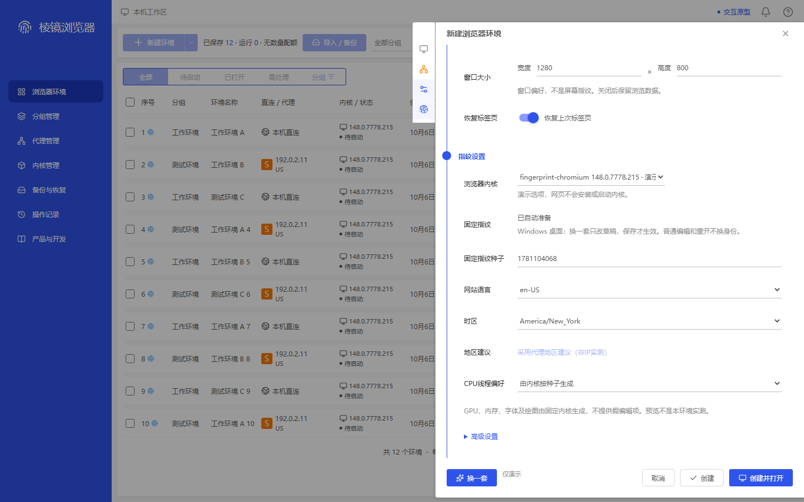
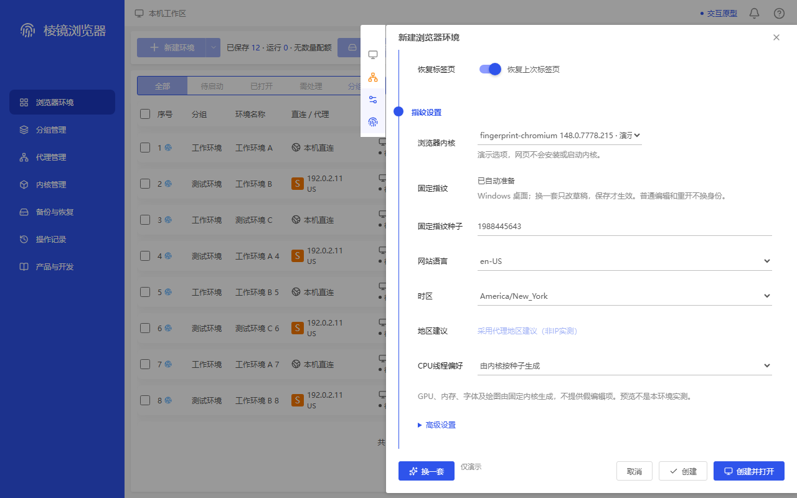
编辑 · environment-edit
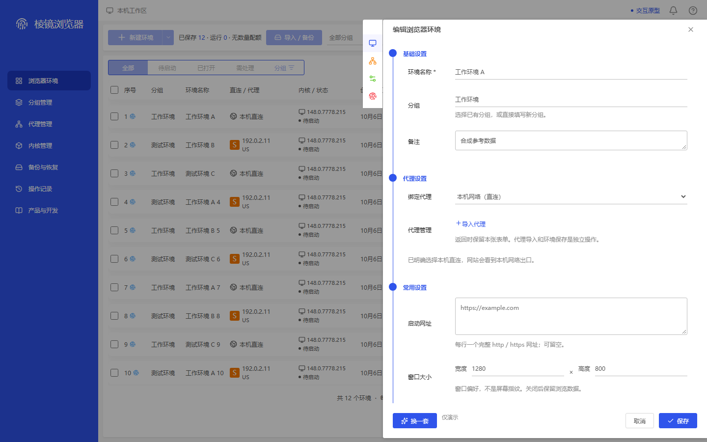

保存失败保草稿（映射）· environment-save-failed
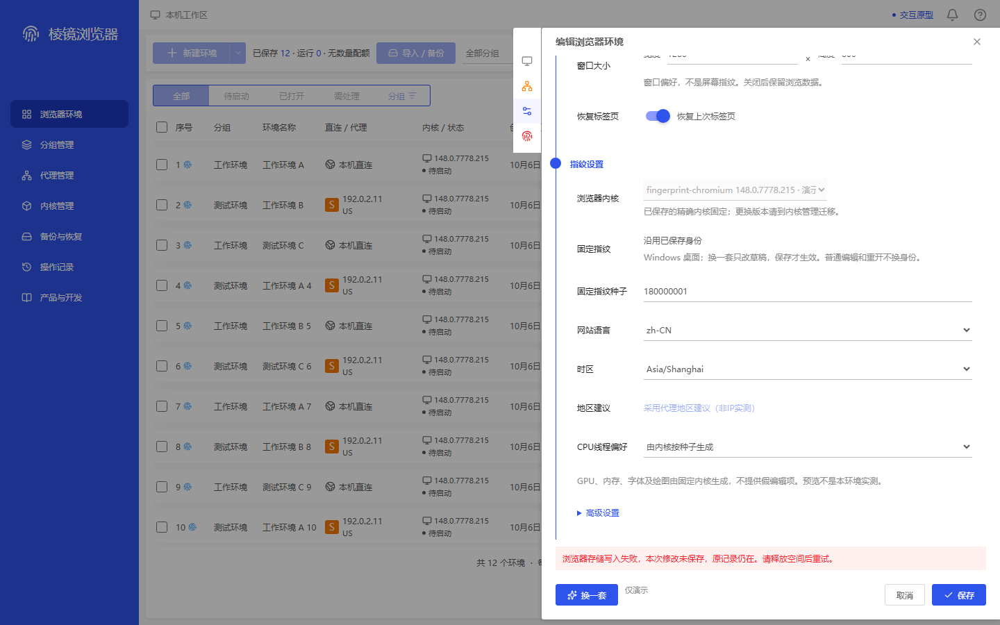
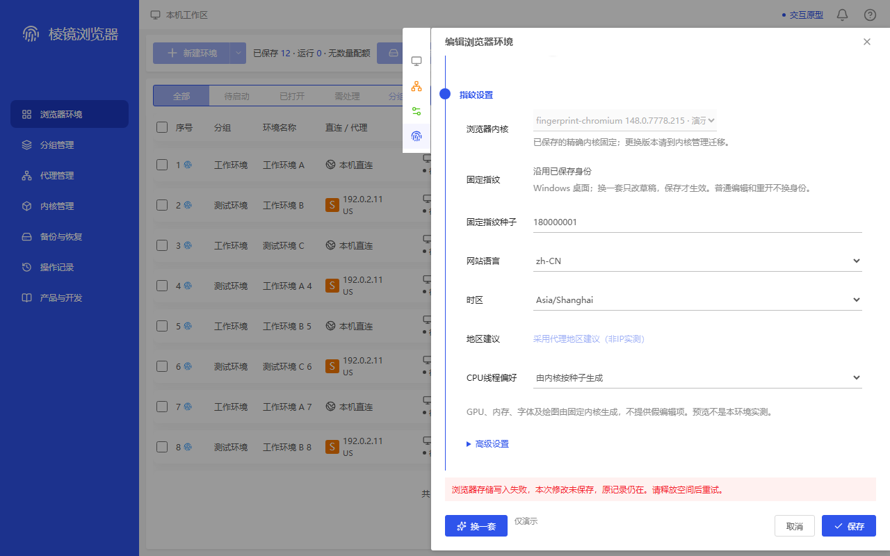
未保存确认（400px 映射）· dirty-confirm
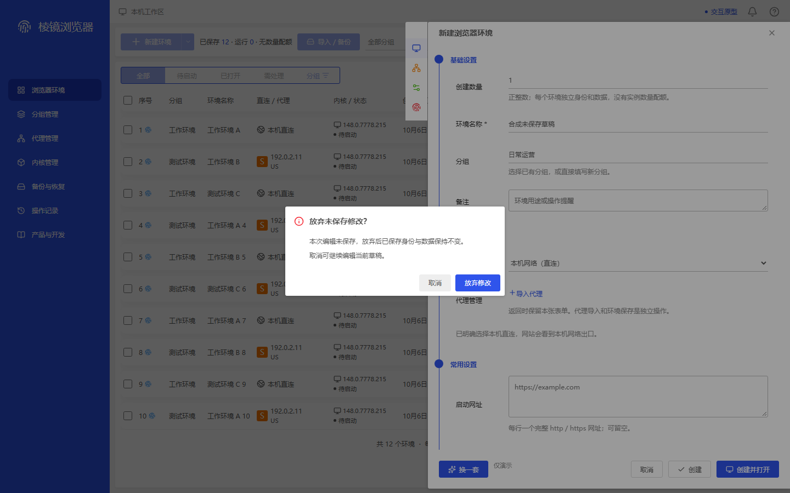
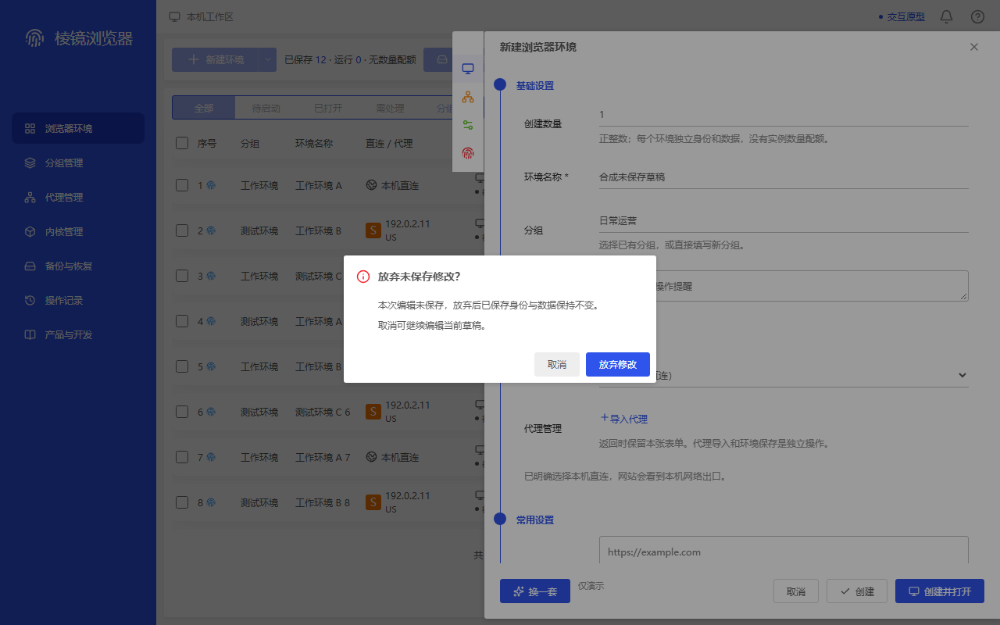
原会话强制结束确认（400px 映射）· force-confirm
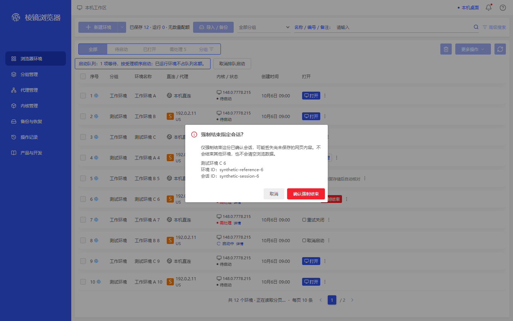
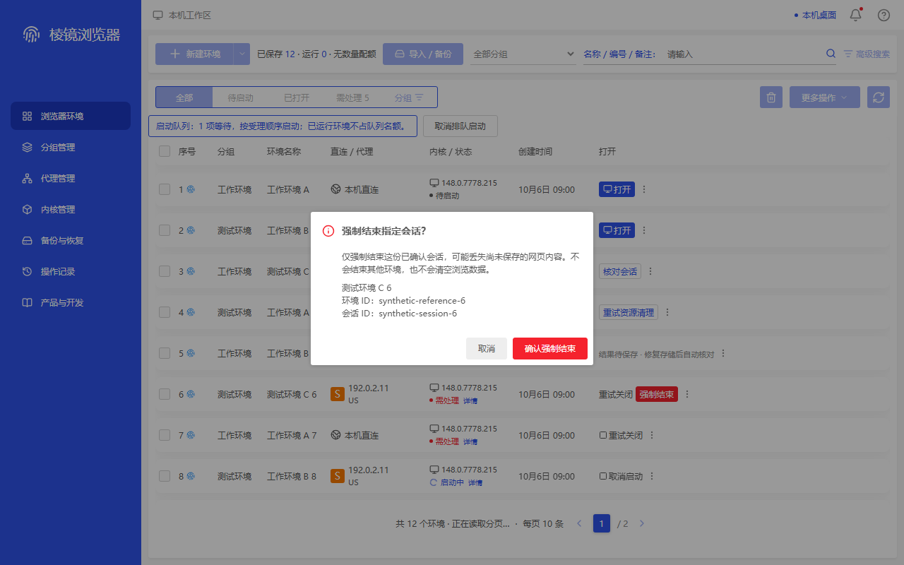
demo Cookie 预览（1050px 映射）· demo-cookie-preview
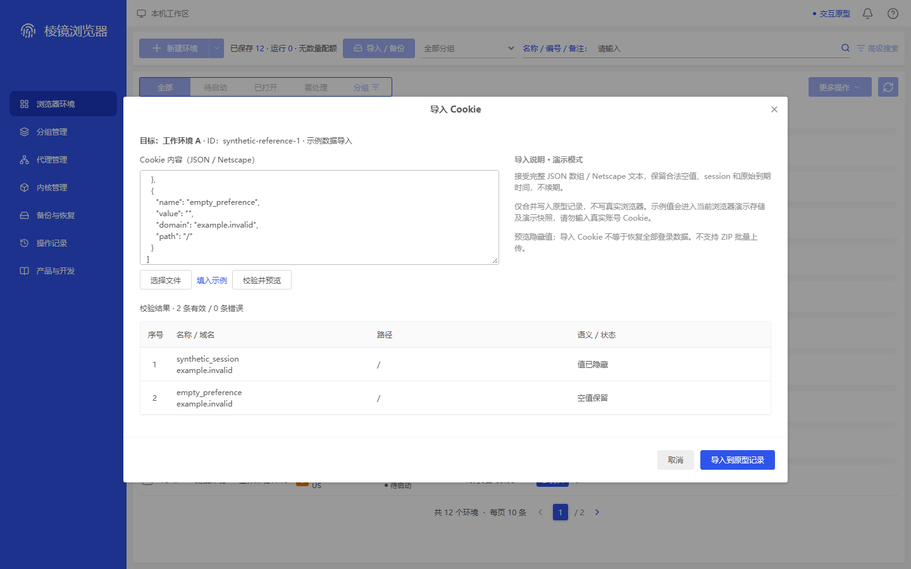
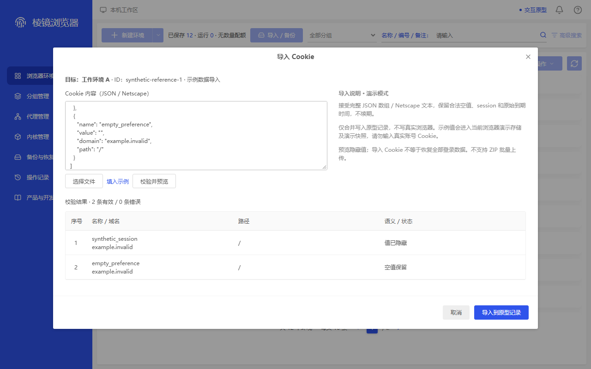
准确两项 demo 移除 · demo-remove-confirm
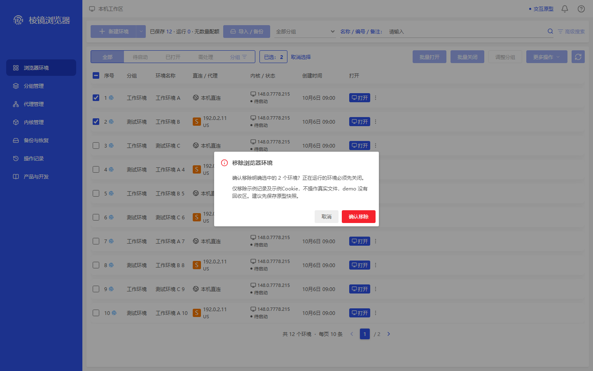
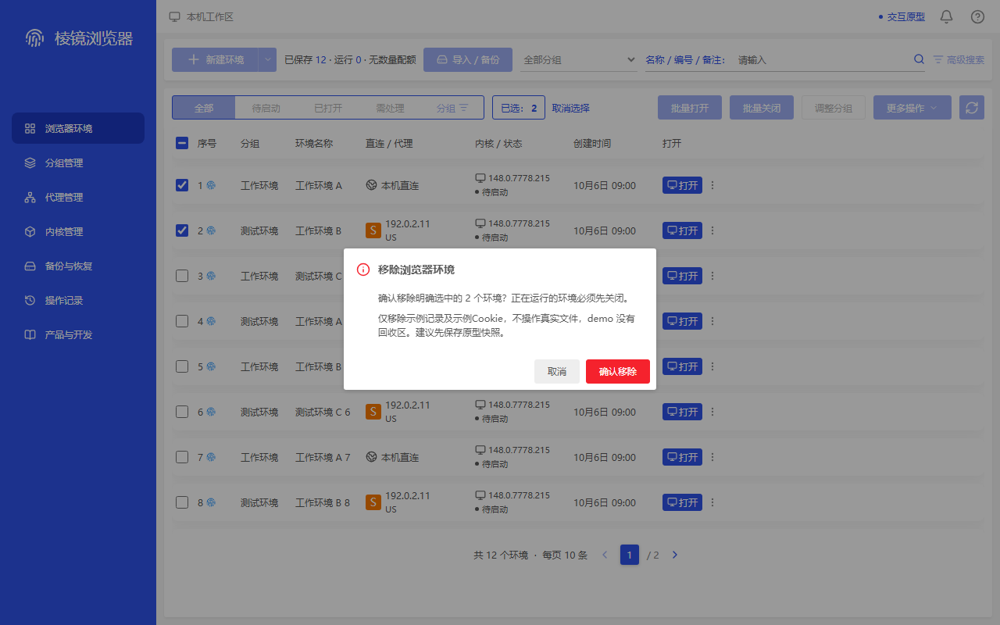